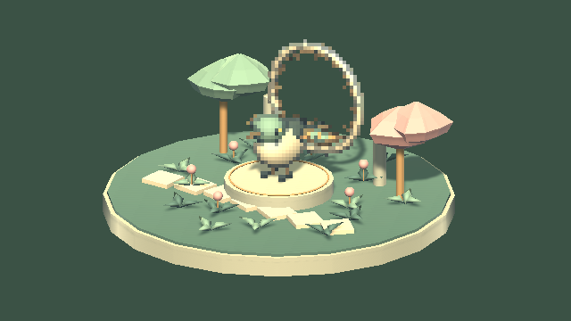
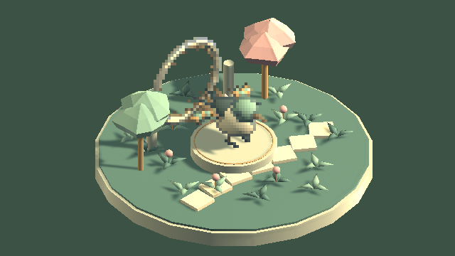
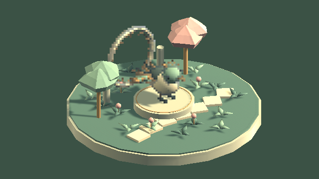

Tracefolio REPORTS & ISSUES
Tracefolio REPORTS & ISSUESPixel Camera 아이소매트릭 기능·예제·9언어 문서 추가
검증 대기두 투영 시점·네 방향·추적·복원을 추가했습니다. Unity 25개 검사와 문서/참조 검사를 통과했으며 사용자 요청으로 화면 조작 QA는 보류합니다.
작업 결과
카메라 기능 구현과 비화면 검증은 끝났습니다. 기존 Garden 예제와 재사용 프리팹, 9언어 문서를 함께 추가했습니다. 실제 Inspector·Play 단축키·브라우저 화면 검증은 사용자 요청으로 보류합니다.
변경 내용
적용 내용
- PixelCameraIsometric: 직교 투영, 정확한 아이소매트릭 35.264°/픽셀 아트 2:1 30°, 네 방향·주시점/대상 추적·화면 크기·기존 설정 복원. 기존 PixelCameraEffect와 함께 사용합니다.
- Garden 예제: I 전환, Q/E 90° 회전, K 시점 전환, R 초기화, 휠 확대. 기존 시작 시점은 유지하며 IsometricCamera.prefab도 제공합니다.
- 신규 Inspector는 공통 템플릿과 9언어 카탈로그를 사용합니다. 9개 기능 가이드와 제품/Studio 통합 문서를 갱신했습니다.
- 사용자 요구를 템플릿의 기존 지침에 통합: 기능 추가·변경마다 같은 작업에서 실행 가능한 예제와 9언어 문서를 갱신하고 실제 검증합니다. AGENTS.md·TempleteRoadmap.md·ProductDocumentation.md에 반영했습니다.

변경 전: 기존 Garden 카메라 시점.

변경 후: 같은 Garden의 정확한 아이소매트릭(35.264°).

같은 Garden의 픽셀 아트 2:1(30°).
검증
- Unity 6000.0.83f1 전용 격리 프로젝트에서 실제 카메라 투영·추적·복원·씬 저장/재열기·렌더 등 25개 검사 통과. 실행 근거
- 정확한 아이소매트릭의 세 축 투영 길이, 2:1 기울기 및 사용자 지정 투영/컬링 복원 확인. 재열기 전후 PNG 바이트가 동일합니다.
- Runtime·Samples·Editor·Development·URP·URP.Editor 6개 어셈블리 정적 컴파일 통과.
- 27개 기능/제품/Studio 문서에서 실제 생성된 본문 JS를 실행하여 장 이동·이미지/링크 경로를 검사했습니다. 9언어 신규 필드/선택 키를 대조했습니다. 구조·문서 근거
- Unity 재저장의 무관한 변경을 제외했습니다. 원래 씬의 518개 객체를 보존하고 카메라 컴포넌트 목록에 새 컴포넌트 하나만 연결했습니다. 실제 렌더는 변경 전·두 시점·재열기별로 보존했습니다. 최종 직렬화 씬의 네이티브 재실행은 화면 조작 보류 뒤 수행하지 않았습니다.
- PNG는 원본 640×360, 각 72,027~101,597바이트로 재가공하지 않았습니다. 실제 Camera.Render 출력이며 Inspector 캡처가 아닙니다.
- 작업용 Unity 종료와 공유 언어 설정 복원 확인. 사용자 기존 Unity/게임 창은 종료하지 않았습니다.
- 교훈 검토: 사용자 명시 요구를 프로젝트 템플릿 기존 문서/예제 지침에 통합했습니다. 적용 범위는 템플릿 기반 제품 기능 작업이며 설치된 전역 지침은 변경하지 않았습니다.
남은 사항
- 사용자 요청: 화면 조작 보류. 실제 Inspector 선택값/취소·언어/테마 표시, Play의 물리 단축키·휠, 브라우저 표시/파비콘은 미실행입니다. 화면 조작 재허용 후 이어서 검증합니다.
- 이번 기능은 카메라의 투영·각도를 제어합니다. 참고 이미지 수준의 아웃라인·재질·조명·팔레트 품질을 맞춘 결과로 보고하지 않습니다.
- 실제 UI 화면 캡처와 최종 씬 재캡처가 남아 있어 전체 작업 메뉴얼은 complete로 처리하지 않습니다. 기존 스크린샷 기록을 최신 소스 해시로 덮어쓰지 않았습니다.
작업 시간
- 제안 시간: 30~60분
- 실제로 완료된 시간: 시작 2026-11-05 16:02:21 KST. 구현·비화면 QA 집계 2026-11-05T07:31:21.505Z; 전체 완료 시각은 화면 QA 보류로 미기록.
- XERJ: 미사용 — Status에서 노드 미실행 확인. PixelCamera는 기존 인덱스 범위 밖이며 rg로 현재 소스 대조.